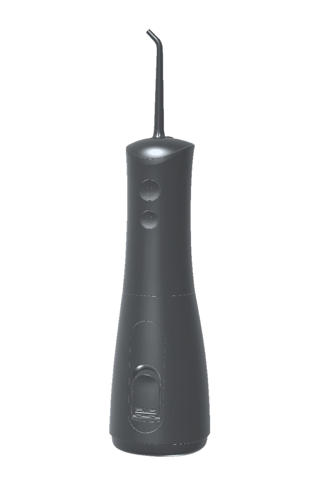

Clean where
brushing stops.
A cordless water flosser built for the gumline — the part of your mouth a toothbrush was never designed to reach.

- Shipping
- Free, 2–4 working days
- Returns
- 30 days, no questions
- Warranty
- 2 years, parts and labour
- Support
- Answered within one working day
The honest bit
It doesn't replace floss.
It reaches what floss can't.
Most brands in this category will tell you a water flosser replaces string floss. It doesn't, and pretending otherwise is why so many people buy one, feel underwhelmed, and stop using it within a month.
Here is what's actually true. String floss is better at scraping the tight contact between two teeth. Water is better everywhere floss struggles to go — along and just under the gumline, around brackets and permanent retainers, between implants and crowns, and into the pockets where gum problems start.
Used together, they cover the whole mouth. Used alone, each leaves something behind.
We'd rather tell you that now than have you find out after you've bought one.
How it works
Nearly everyone who gives up on a water flosser was using it wrong.
It isn't a matter of pressure. It's a matter of aim. Three things get it right.
Fill it, and start low
Lukewarm water in the tank. Begin on the lowest pressure — if your gums are inflamed they will bleed a little at first, and that settles within a week or two of daily use.
Trace the gumline, not the teeth
This is the part everyone misses. Aim where the tooth meets the gum and hold at roughly ninety degrees. Pause briefly between each tooth. Pointing it at the flat face of the tooth achieves almost nothing — which is exactly why people conclude it doesn't work.
Lean over the sink, lips nearly closed
Let the water fall out as you go. This is the difference between a clean routine and a wet bathroom mirror, and it takes about forty seconds once you have the hang of it.
 Motion sequence — in production
Motion sequence — in production
Watch the technique
A short, silent sequence showing the nozzle angle, the path around the arch, and the pause between teeth — the three things that decide whether this works for you.
The animation is being produced from the product's engineering model and will sit here, playing on scroll with a static fallback for anyone who prefers reduced motion.
Who it's for
If any of these are you, this will make a noticeable difference.
Braces and aligners
Brackets and wires trap what floss can't get around.
Permanent retainers
A bonded wire makes conventional flossing genuinely difficult.
Implants and crowns
Margins and abutments need cleaning without abrasion.
Gum pockets
Where a periodontist has asked you to clean below the gumline.
Receding gums
When brushing harder is doing more harm than good.
Tight contacts
Teeth so closely packed that floss shreds or won't pass.
Limited dexterity
Arthritis, injury, or anything that makes floss awkward to handle.
Wisdom teeth
The gap behind the last molar that nothing else reaches.
If none of these apply and you floss consistently without difficulty, you may not need one. We'd rather say so.
The object

Made to be left out,
not put away.
Most water flossers look like something borrowed from a dental surgery. This one is a single tapered form with a textured grip panel, two flush controls, and a tank that reads at a glance — designed to sit on a shelf you actually look at.
Cordless, so there is no hose, no base station, and nothing to route around a socket.
- Dimensions
- 69 × 76 × 215 mm
- Colourways
- Black · Soft White
- Power
- Rechargeable, cordless
- Pressure settings
- To be confirmed
- Tank capacity
- To be confirmed
- Water resistance
- To be confirmed
Comparison
Where each one actually wins.
Not a sales table. A straight account of what each method is good at, so you can decide what you need.
| Water flosser | String floss | Mouthwash | |
|---|---|---|---|
| Cleans along and under the gumline | Yes | Partly | No |
| Works around braces and retainers | Yes | Difficult | No |
| Scrapes tight contacts between teeth | Partly | Yes | No |
| Reaches implants, crowns and bridges | Yes | Difficult | No |
| Comfortable with sensitive or receding gums | Yes | Often not | Yes |
| Requires correct technique | Yes | Yes | No |
The honest conclusion: a water flosser and string floss are complements, not alternatives. Mouthwash is neither — it freshens, it doesn't remove anything.
Why buy from us
We're new. Here's how we've made that your advantage, not your risk.
Two-year warranty
Parts and labour, claimed through a form rather than a phone queue. If it fails inside two years we replace it.
Thirty days to change your mind
Use it properly for a month. If it isn't making a difference, send it back and we'll refund it.
We tell you what it isn't
No claims about curing gum disease, no invented statistics, no reviews we didn't earn. Everything on this site is either verifiable or marked as not yet confirmed.
Professional opinion
What dental professionals say.
This section is designed and awaiting content.
It will hold three named practitioners — dentist, hygienist and periodontist — each with their qualification, practice and location shown, so the endorsement can be checked rather than taken on trust.
We won't publish anonymous quotes or stock portraits here. Until real practitioners have used the product and agreed to be named, this space stays empty.
Questions
The things people actually ask.
Will I see bits of food come out?
Sometimes, and sometimes not at all — and that is not a sign it isn't working. If your teeth are tightly packed there may be very little visible. Most of what a water flosser removes is soft plaque and bacteria at the gumline, which you won't see. Judge it by how your gums feel and look after two weeks, not by what lands in the sink.
Can I stop using string floss?
We'd rather you didn't. Water is better at the gumline and everywhere floss can't reach; floss is better at the tight contact between two teeth. Together they cover the whole mouth. If you genuinely cannot or will not floss, a water flosser is far better than nothing — but it isn't a straight swap.
My gums bleed when I use it. Should I stop?
Usually not. Bleeding is generally a sign of existing gum inflammation rather than damage, and it typically settles within one to two weeks of daily use. Start on the lowest pressure. If it hasn't improved after two weeks, or the bleeding is heavy, see your dentist — that's a conversation about your gums, not about the device.
Is it messy?
It is if you stand upright with your mouth open. Lean over the sink and keep your lips almost closed, letting the water run out as you go. Everyone gets this within a couple of uses.
How long does it take?
Around forty to sixty seconds for a full mouth once you're used to it — roughly the same as brushing, and typically faster than flossing properly.
Who shouldn't use one?
If you have active gum disease under treatment, recent oral surgery, or a newly placed crown or implant, check with your dentist before starting. It isn't intended for young children. And if you already floss thoroughly every day without difficulty and your dentist is happy with your gums, you may simply not need one.
What about pressure, battery life and tank size?
Those figures are being confirmed against the final production unit and will be published here in full. We're not going to print numbers we haven't verified — everywhere a specification is still outstanding on this site, it says so.
Stay in touch
We'll send you the technique guide, and tell you when the next product is ready. Nothing else.
Unsubscribe in one click. We don't share your address.